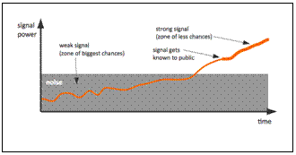
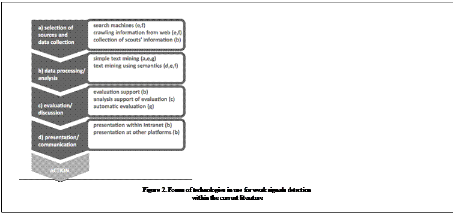

Paper Title :
Detecting Weak Signals with Technologies
Overview of current technology-enhanced approaches for the detection of weak signals
Abstract
Research as well as enterprises are interested in detecting early signals for new developments and innovations. Therefore an increasing number of approaches to detect weak signals are developed and applied. Of course, technologies and applications also play a role within current signal detection research. Based on secondary sources, this contribution describes the results of a comparison of different technology-enhanced approaches for the detection of weak signals. We checked the literature concerning relevant case descriptions from 2009 to today. The analysis compares seven documented approaches including their utilization of technology in certain steps of the weak signals detection process. It can be shown that the current applications of technologies are very diverse. Case reports in the literature do not focus on reflecting about the technology use. In this paper, we fill this gap by offering a structured comparison as well as a comprehensive collection of reasons for or against either technology, including positive effects as well as challenges.
Authors
Robert Eckhoff
Mark Markus
Markus Lassnig
Sandra Schön
Innovation Lab
Salzburg Research Forschungsgesellschaft
Salzburg, Austria
Paper Transcript of Paper Titled :
Detecting Weak Signals with Technologies
Overview of current technology-enhanced approaches for the detection of weak signals
Detecting Weak Signals with Technologies
Overview of current technology-enhanced approaches for the detection of weak signals
Robert Eckhoff, Mark Markus,
Markus Lassnig, and Sandra Schön
Innovation Lab
Salzburg Research Forschungsgesellschaft
Salzburg, Austria
Abstract— Research as well as enterprises are interested in detecting early signals for new developments and innovations. Therefore an increasing number of approaches to detect weak signals are developed and applied. Of course, technologies and applications also play a role within current signal detection research. Based on secondary sources, this contribution describes the results of a comparison of different technology-enhanced approaches for the detection of weak signals. We checked the literature concerning relevant case descriptions from 2009 to today. The analysis compares seven documented approaches including their utilization of technology in certain steps of the weak signals detection process. It can be shown that the current applications of technologies are very diverse. Case reports in the literature do not focus on reflecting about the technology use. In this paper, we fill this gap by offering a structured comparison as well as a comprehensive collection of reasons for or against either technology, including positive effects as well as challenges.
Weak signals; detection; approaches; comparison; criteria
Introduction
Computer systems play an important role in management procedures. Of course, the use of computer systems influences and forms management or at least some of its processes. Also within innovation management and strategic considerations of business development for enterprises, computers are involved. One approach of strategic development is the detection of so-called “weak signals”. Such signals are seen as potential important signs for future developments with big impact on the enterprise. Being able to recognize such signals for future trends and developments early, might create an opportunity to innovate products or services. The concept of “weak signals” is thirty years old [1] and there is a wide variety of approaches to detect them. Not surprisingly, also technologies are used to detect weak signals. Still, the literature on weak signal detection offers no overview of how such technologies are currently in use. Within this contribution, we will address this issue and start with a short overview of the concrete research questions. Then the term “weak signals” and technology use within foresight will be introduced. Building on this, we will describe our research design to gain more insights about the use of computers and Internet for the detection of weak signals for innovation purposes as well as our research question. After the presentation of the results, we will discuss and reflect our findings.
Detecting Weak Signals
According to Ansoff weak signals are “imprecise early indications about impending impactful events” [2]. All that is known, he proceeds, “is that some threats and opportunities will undoubtedly arise, but their shape and nature and source are not yet known” (ibid.). Compared with other levels of knowledge about the future, weak signals are among the vaguest, especially compared with “drivers” or even “trends” (see [1] and table 1). It is either totally surprising (positively or negatively) or gives you the feeling of change (ibid.).
Future signals sense-making framework
(see Kuosa [1], p. 45)
| The levels of future knowledge |
The fundamental nature of information |
|
|---|---|---|
| Disrupters / non-linear |
Promoters / linear |
|
A. Weak Signals |
Any observation that is totally surprising, amusing, ridiculous, or annoying to you. |
Any observation that tells about change and makes sense to you. |
B. Drivers |
Your understanding of potential seeds of change. |
Your understanding of demands of change. |
C. Trends |
Your understanding of blockers and change. |
Your understanding of inevitable large change processes. |
The collection and detection of weak signals could “be a key to anticipating changes in advance and avoid letting them cause surprise” [3]. What makes the detection a big challenge is that they normally are hidden in the “noise of the daily produced data” [4], see also figure 1.
In a survey experts should rank their favored sources for the detection of weak signals [7]: In some of the branches, for example economics as well as society and culture, futurologists are the preferred source for weak signals detection. In politics, these are politicians; in technology and science, these are scientists/ researchers. Besides individuals, who are always at the first ranks of preferred sources, also other sources are amongst the top ten, for example marginal/underground press (environment) or blogs (society and culture).
Nevertheless, it is unclear if weak signals really (always) are present and detectable, even if the literature sometimes implies “that they lie ‘out there’ almost as a commodity” [8, p. 379]. To get a better idea what characteristic “weak signals” might have or what they can be, it is suggested to use hindsight to detect and identify weak signals for current trends to get better information on how they might be detected in the future [3]. Additionally, it is not only complicated to detect such weak signals in the noise, but also to get them (or the “real” weak signals) into the further evaluation process and discussion. Already Coffman described the issue of “people who ‘know’” that scoffed at weak signals [5]. “Cognitive filters” influence the final detection of what is coined as “weak signals” and which weak signals might be overseen. Ansoff named mental filters that influence the realization of weak signals within enterprises: The “surveillance filter” focuses on special parts from the environment which might deliver data and the “mentality filter” is responsible for the selection that comes to perception in a firm. The third filter, the “power filter” might be the influence of managers who neglect information. As described and empirically shown in [9], such mental filters can be influenced by the setting. Filters can be opened by “virtual process, open question and anonymity” (ibid., p. 919). The filters can be deepened through “focused scope, close to the current strategy, strong requirement for plausibility and probability in the social interaction process” and others (ibid., p. 919).
Besides these challenges, weak signals detection draws increasing attention from futurologists as well as enterprises, because this concept gives at least a framework of how future developments might be recognized in a very early stage. Concrete approaches and applications are part of strategic foresight activities in enterprises as well as in research, and are still under development. Of course, technologies play a growing role within such approaches.
Use of technologies for foresight
IT tools are more and more used to detect weak signals. This is especially illustrated with a comparison of about 20 social media monitoring tools according to their usability for the detection of weak signals [4]. Main criteria are: clear and versatile presentation of the results, support of directed and undirected search, variety of analyses, multilingual analyses, and time series analyses. These criteria are related to functionalities of the software, however social media monitoring software is not the only way to detect weak signals. So, it stills remains unclear, in which ways technologies, for example IT tools or systems, are currently in use for the detection of weak signals.
 Rohrbeck et al. provide a more general overview of use of IT tools for foresight within enterprises ([10], see table 2). They distinguish between tools that are used for data gathering, for interpretation, and for organizational response. Rohrbeck himself describes his overview as “only a limited understanding about how individual IT support tools can be integrated into holistic foresight support systems” and refers to [11]. For example, social media monitoring or data-mining tools are missing in Rohrbeck’s overview.
Rohrbeck et al. provide a more general overview of use of IT tools for foresight within enterprises ([10], see table 2). They distinguish between tools that are used for data gathering, for interpretation, and for organizational response. Rohrbeck himself describes his overview as “only a limited understanding about how individual IT support tools can be integrated into holistic foresight support systems” and refers to [11]. For example, social media monitoring or data-mining tools are missing in Rohrbeck’s overview.
use of IT tools (Selection) for foresight in enterprises according to Rohrbeck [10, p.7; 12]
Use |
Examples for IT tools |
Data gathering |
News readers, internal libraries, document management platforms, corporate directories, social networks, online idea competitions, internet-based broadcast search |
Interpretation |
Social networks, tagging platforms, real-time delphi analyses, Wikis, Weblogs |
Organisational response |
Corporate directories, instant messaging, Wikis, online idea competitions, mailing lists |
Research Questions
There are many hints for approaches to detect weak signals for innovation purposes in the literature. Technology-enhanced detection methods or analyses seem to be quite common. Nevertheless, the concrete use of tools seems to be diverse and often also vague. In our research, we try to find answers to the following questions concerning the last five years:
- How are weak signals detected with technology-enhanced systems and methodologies?
- In which concrete ways and roles are technologies currently in use for the detection of weak signals?
- How does technology influence the detection of weak signals?
Research Design
Combining literature research and analysis, we try to address the above research questions.
Collection and Selection of Examples
For the detection of examples, we undertook a comprehensive literature search. We hereby focused primarily on research papers in order to gain a more elaborated and concrete description of uses and applications than possible using other sources. Therefore, we scanned all publications of the last five years described in the database Sciencedirect.com. We searched for the terms “weak signal”, “detection” and “innovation” beginning with the year 2009. In addition, we used Google Scholar and followed the references within literature to find possible publications that could not be found with the above method.
Criteria to describe detection approaches in the literature
Possibilities to describe diverse approaches to detect weak signals are to be found in the literature. For example, approaches to detect weak signals are already compared on a very general level based on the following aspects [13; p. 20]: information/insight quality, continuity of analysis, efficiency, real-time information, information amount, and quantitative overview. Another contribution lists functionalities of social media monitoring tools that might be used to detect weak signals, e.g. clear and versatile presentation of the results [4]. As we are less interested in concrete analysis tools, but in the general use of technologies within the process of weak signal detection, we are developing a scheme to compare the roles of technologies.
For this purpose, we discussed several approaches to analyze the use of tools. Finally, we decided for a simple process-orientated approach. Therefore, we divided the weak signals detection process into five steps and looked how technology is used within each part: (i) Selection of sources and data collection, (ii) data processing and analysis, (iii) evaluation and discussion, (iv) presentation and communication, and finally (v) action.
Results
In the following, we present the results of our literature analysis concerning the use of computer support and systems for weak signals detection.
Selected cases with descriptions of technology-enhanced weak signals detection
Within Sciencedirect, we reached 626 hits (September 2014) for the search terms “weak signals”, “innovation” and “detection”. A majority of these hits was not from future studies, but from physics, e.g. about amateur radio weak-signal communication. After scanning all abstracts, we selected 14 publications, where the abstract gave the impression of a detailed description of the concrete approach and the technology used. After reading them, only five publications remained offering valuable insights into concrete cases [10,14,15,16,17]. Other papers were not included in this selection, because the concrete use of IT and the general approach were not described. For example [18] discusses uncertainty factors for a Norwegian high-speed railway project as weak signals detection analysis, but includes no description of technology use, although it seems very clear that some kind of technology was used. Other papers on the topic only describe the use of technologies but give no concrete case insights, for example [19]. Other articles are hindsight analyses without adoption of the developed or tested approaches within current settings [20,21]. In some cases, two or more papers were available for the same or similar cases or experiences, see [13,22].
Using Google Scholar and following the references of the found publications, further (potential) case descriptions were found. Again, some of the papers did not describe how (and if) technologies were concretely used within their weak signals detection process, while it seems obvious that they used software, for example while detecting weak signals within technology-enhanced learning [23].
Of course, also older contributions (before 2009) are available that describe the use of IT for weak signals detection, for example [9, 19]. As our final set of current contributions is small, we discussed to integrate them. However, very similar approaches and experiences were found in our set of current papers and due to the fast development of IT technologies, we did not extent our search horizon (e.g. including only papers from the last five years).
To sum up, we collected a set of seven research papers that specify the use of technology for weak signals detection. Our final set of publications describes the following uses of IT within the process of weak signals detection:
(a) A naive application of text mining to identify emerging terms within conference abstracts in the field of technology-enhanced learning [24].
(b) A tool set for scouting (collecting data from scouts, edited by an expert round) as part of an integrated insight and response system at the Deutsche Telekom Innovation Laboratories [10]
(c) The application of a quantitative model for detecting weak signals (emerging trends) with the help of a inference model and Bayesian network at a “weak signals tracking board” as part of the “New and Emerging Signals of Trends” model dealing with future sciences and technologies [14]
(d) In the field of life sciences a set of monitoring and data-mining approaches are integrated to deliver a “technology radar” with the help of a technology watch team [15].
(e) The “Innovation signals” approach combines automatic (semantic data mining technology) and social scientific analyses of user-generated content to detect weak signals within the topic alpine skiing [13,22]
(f) In another case study, weak signals in the field of on-site medical oxygen production were detected with semantic web mining and latent semantic indexing. The authors additionally compare the results (the labelling of the diverse sources) with manual work and calculate precision and recall. [16]
(g) In the last case a text mining approach is described, where Web news are analysed through keyword search related to solar cells. Signals that got recently stronger and are relatively seldom are seen as potential weak signals. [17]
Overview of approaches of weak signals detection with technologies
First of all, we wanted to know which approaches of weak signals detection are deployed when technologies are in use. We found the following approaches within our set of current approaches:
Within four approaches, IT tools are integrated in a complex and combined automatic as well as expert-based detection of weak signals and other future developments (c,d,e,g).
Within two approaches, description technology is used for a semi-automatic mining (analysis) strategy (a,f).
Within one approach, description tools are used to support the community-based collection and detection of weak signals (b).
According to our process-oriented analysis, the application of technologies can be outlined as depicted in fig. 2. As it is shown, none of the described applications are built completely on the use of technologies and delivered automatically only. Additionally, it can be seen that IT tools are used within every process step to a certain amount. It seems safe to assume that information technologies play a bigger role in the process, as IT tools are standard for communication as well as research. We guess that several more “standard” tools (for presentation, storage, processing) may be used but not described within a scientific contribution. Thus, our description here only includes those technologies that specifically refer to weak signal detection.
In the following, we will describe the use of technologies along the process of weak signal detection. Please be aware that this description mixes (snippets of) several distinct approaches.
Technology use for selection of sources and data collection
Technologies are in use for the selection of sources and data collection. Within the Innovation Signals approach (e) [13,22] search engines are used to collect and define valuable community systems as sources for later analysis. At Deutsche Telekom (DT) Group (b) [10] three integrated platforms support foresight and response systems. The detection of weak signals is only addressed in the phase where a scouting tool is in use (PEACOQ Scouting). Internal and external scouts contribute their findings within the system; editors filter their contributions. Interestingly, within case (c) personal opinions (even on source data) are not allowed [14, p.72], only quality checks of an existing collection are possible. Whereas in case (f) the search queries building on a hypothesis are created manually, also the selection of keywords in other languages and the next steps of web mining are processed automatically: Search engines are used and crawlers extract full texts from all URLs. Surprisingly, although Web news are sources in case (g), the data was not extracted from the Web as a data base was used (with Web news, publications and more), so that no additional source selection is needed.
Technology use for data processing and analysis
In five cases (a,d,e,f,g), technologies are used for data analysis, but three of them (d,e,f) use additional social scientific techniques in the analytic phase. In two cases (a,g), text mining approaches try to identify and count developments of topics, minimizing human effort. Within the cases d and e the concrete analysis is not described, but both cases refer to semantic analysis and additional expert evaluations and decisions made while analyzing. The innovation signals approach (e) for example uses bottom-up as well as top-down approaches when trying to find a deeper understanding of potential weak signals. That means pre-defined keywords (top-down) are used for analysis as well as data mining approaches (bottom-up) – and the analysis itself is not only done with the support of a tool, but essentially builds on social sciences’ competencies. Within case (f) the (automatically) retrieved documents are analyzed within certain steps (and tools): cleaning of raw data, filtering (e.g. word stemming). Then longer texts were broken down into smaller segments (sentences, via tokenization). As latent semantic analysis requires all texts to be in the same language, everything was automatically translated into English beforehand.
Technology use for evaluation and discussion
In case (b), where weak signals were collected with the help of scouts, the process of evaluation is also supported through the system. Editors for example reject new “topics”, combine them and put them in order. In an expert round, the topics are assessed and a short-list is selected with topics (weak signals) that have to be investigated in more depth. In case (c), the key support of technologies can be seen within the evaluation process. Data of experts are the base for an analysis as inference model, using a Bayesian network, calculating several probabilities for certain developments. This is illustrated at a “weak signals tracking board” and part of a more complex “New and Emerging Signals of Trends” model dealing with future sciences and technologies (and not only with weak signals) [14]. Within case (g) the decision which signals are weak or strong and which are seen as “weak signals” are based on the two dimensions frequency and time, weighted by the rate of increase. Within case (f), where the process was dominated by automatic analysis, the evaluation phase includes a test of results quality. Therefore, the latent analysis part was also manually done and recall and precision were calculated by hand. This gives an idea of how precise the approach is at this certain step.
Technology use for presentation and communication
In case (b) the PEACOQ Scouting tool is related to the other tools and systems. Content can be shared within the whole Telekom group for example at the Intranet landing page. Within all other cases no special support through technologies is mentioned.
Reasons for the use of technology
With one exception (b), the cases in the literature do not discuss the role of IT use itself,. So, the following reasons for the use of technology are dominated by this case.
In general, within the cases (a,c,d,e,f,g) it would not be possible to deal with the amount of data and to carry out the analysis manually. This would probably be impossible without the help of technologies. In case (c), the tool helps to analyze complex data (probabilities for single events) in a comprehensive way (probabilities that certain signals will have an influence in the future). Within case (e), the use of tools for analysis of user-generated content aims to find new ideas for and insights into possibly interesting topics or signals through automated analysis by means of semantically enhanced data mining (e).
Within case (b), the use of a platform is essential so that all Deutsche Telekom employees and also external stakeholder can contribute, because face-to-face meetings or other solutions would be more expensive or unapt.
In case (b), the mobile application for the scouting system gives the opportunity to contribute small “surprises” and reflections to the system in a relatively simple and informal way.
While using the technologies in the process of weak signals detection, the literature also offers some insights into positive effects and challenges.
Positive effects of the use of technology
The following positive effects might result from the use of technology in our seven cases:
The scouting system makes it possible that internal and external scouts from different countries can contribute. (b)
The integration of the weak signal detection platform (scouting platform) with other systems makes it possible to integrate the weak signals into other strategic processes around future developments (e.g. idea generation). (b)
The development of mobile views triggered an increase in contributions. Concerning „detecting change“: „The Scouting Tool allows posting reports on change when they are still in the stage of a weak signal, as the transaction cost associated with posting topics is comparatively low.” [10] (b)
Challenges of the use of technology
The following challenges of the application of technologies are addressed within the case descriptions:
Within case (a), several special challenges in text mining are addressed, that are not directly a consequence of the use of technology, e.g. the appearance of project acronyms as possible false-positive term identification [10, p. 53].
Case (b) reports „effects such as the reduction of face-to-face communication that might reduce the overall level of interaction and potentially the level of trust“; but they continue to have face-to-face occasions [10].
Another challenge within case (b) was that a lot of people should use the platform as „yet another tool“ - single-sign-on improved this.
Internally, the Deutsche Telekom reports of security issues within case (b), which are a challenge every enterprise-wide system faces.
- Besides the description of (b), a detailed description of arguments pro and contra the use of technology is not available, by now. Our collection here should be seen as a first, albeit incomplete, collection.
The influence of technology on weak signals detection
On a meta-level, we want to reflect on the influence of technology on the practice of weak signals detection in addition to obvious and listed reasons, positive effects and challenges. As we did not find an approach towards weak signals detection without technology support, this is of course a somewhat speculative approach.
Taking the above set of cases as potentially representative for current weak signals detection with technologies in general, the current use of technology seems to be very diverse. Case (b) builds on a support of collection and communication as well as evaluation. Here, the main idea is to develop an appropriate infrastructure to support individual scouts, including a mobile application. This is directly related to the preferred source of data within the case: contributions of internal and external scouts. Within all other settings, the technology supports the analysis of data, either in the first phase of analysis (a,d,e,f,g) or in the evaluation phase (b,c,g). In four cases (d,c,e,g) this includes experts decisions and additional analyses. Only within two cases (e,g) content from the Web was used as a source for weak signals detection, for example Weblogs [19].
Interestingly, arguments building on the filter theory that IT communication systems allow anonymous contributions and reduce effects of some filters [9], are not mentioned within case (b) and do not seem to have consequences in the other cases.
Currently, a Delphi study with a global panel of foresight experts on the influence of information and communication technologies on future foresight processes was published [25]. In general, the Delphi study demonstrates that ICT in 2020 will be a “driver for certain parts of the foresight process: As a result, foresight will become more result and interpretation orientated”. According to many experts, human intuition “will still be the deciding factor in decision making in 2020”. Therefore it might be interesting, how this view influences future use of technologies in the detection of weak signals.
Discussion
Finally, we want to critically discuss our research design as well as the results and futures issues.
According to our literature research, we used the complete relevant set of papers from one database. Additionally, we used other literature databases and references to find additional contributions. But although our approach of literature research was systematic our set is still small, and we are not able to claim that our sample is complete. Of course, there might be other current contributions that describe the use of IT within a weak signals detection process. Yet from our point of view, we would be surprised if additional contributions described completely different settings compared to what we found in our selection of papers.
In addition, our research is limited to approaches that are documented within the literature. Authors of the analyzed contributions did not intend to generate such figures, but we aimed to clarify and sort diverse settings and possibilities that are currently in use. Therefore we consider the delivered overview as a good starting point for future surveys among practitioners and experts, to get reliable data on the exact amount and forms of computer use and its lessons learned.
Finally, our focus on IT in the detection of weak signals should not conceal that it is neither essential, nor completely common to use software support for the detection of weak signals, nor that it is central. For example, there are also qualitative approaches in use that try to detect evolving patterns instead of single signal or path extrapolation approaches. These approaches probably also require the use of computers, but not for analytical reasons [1].
References
T. Kuosa, “Futures signals sense-making framework (FSSF): A start-up tool to analyse and categorise weak signals, wild cards, drivers, trends and other types of information”, in Futures, Volume 42, Issue 1, February 2010, pp. 42–48.
I.H. Ansoff, Implanting Strategic Management, Prentice/Hall International Inc, 1984.
E. Hiltunen, Weak Signals in Organisational Futures“, Aalto University School of Economics, Aalto, 2010.
K. Welz, L. Brecht, J. Kauffeldt, and D. Schallmo, “Weak signals detection: Criteria for social media monitoring tools”, in Proceedings of the 5th ISPIM Innovation Symposium: "Stimulating Innovation: Challenges for Management, Science & Technology", 09-12 December, 2012; Seoul, Korea.
B. Coffman, “Weak Signal Research”, 1997, online available http://www.mgtaylor.com/mgtaylor/jotm/winter97/wsrintro.htm, (2014-08-2014)
K. Steinmüller, “Wild Cards, Schwache Signale und Web-Seismografen. Vom Umgang der Zukunftsforschung mit dem Unvorhersagbaren”, in W. J. Koschnick (eds.), FOCUS-Jahrbuch 2012. Prognosen, Trend- und Zukunftsforschung, Focus Verlag München, 2012, pp. 215–240.
E. Hiltunen, “Good Sources of Weak Signals: A Global Study of Where Futurists Look For Weak Signals”, in Journal of Future Studies, May 2008, 12(4), pp. 21–44.
P. Rossel, “Beyond the obvious: Examining ways of consolidating early detection schemes”, in Technological Forecasting and Social Change, Volume 78, Issue 3, March 2011, pp. 375–385.
L. Ilmola, and O. Kuusi, “Filters of weak signals hinder foresight: Monitoring weak signals efficiently in corporate decision-making”, in Futures In Organisational Foresight, Organisational Foresight, Vol. 38, No. 8. (October 2006), pp. 908–924.
R. Rohrbeck, N. Thom, and H. Arnold, “IT tools for foresight: The integrated insight and response system of Deutsche Telekom Innovation Laboratories”, in Technological Forecasting and Social Change, in press.
V.A. Banuls, J.L. Salmeron, “Scope and design issues in foresight support systems”, in International Journal of Foresight and Innovation Policy, 7 (2011), pp. 338–351.
R. Rohrbeck, Corporate Foresight: Towards a Maturity Model for the Future Orientation of a Firm, Physica-Verlag, Springer, Heidelberg, 2010
M. Markus, R. Eckhoff, and M. Lassnig, “Innovation Signals in Online-Communitys – ein komplementärer analytischer Ansatz”, in M. Blattner, and A. Meier (eds.), Web Monitoring. HMD - Praxis der Wirtschaftsinformatik, 293, 10/2013, pp. 13–21.
S. Kim, Y. Kim, K. Bae, Su.Choi, J. Park, Y. Koo, Y. Park, H. Choi, H. Kang, and S. Hong, “NEST: A quantitative model for detecting emerging trends using a global monitoring expert network and Bayesian network”, in Futures, Volume 52, August 2013, pp. 59–73.
M. Veugelers, J. Bury, and S. Viaene, “Linking technology intelligence to open innovation”, in Technological Forecasting and Social Change, Volume 77, Issue 2, February 2010, pp. 335–343.
S. Haji-Kazemi, B. Andersen, and H. P. Krane, “Identification of Early Warning Signs in Front-End Stage of Projects, an Aid to Effective Decision Making”, in: Procedia - Social and Behavioral Sciences, Volume 74, 29 March 2013, pp. 212–222.
J. Yoon, „Detecting weak signals for long-term business opportunities using text minig for Web news“, in Expert Systems with Applications, 39 (2012), pp. 12543–12550.
D. Thorleuchter, and D. Van den Poel, „Weak signal identification with semantic web mining”, in Expert Systems with Applications, 40 (2013), pp. 4978–4985
R. Cachia, R. Compañó, and O. Da Costa, “Grasping the potential of online social networks for foresight”, in: Technological Forecasting and Social Change, 74, 8, October 2007, pp. 1179–1203.
B. Song, „Weak Signal Detection on Twitter Datasets. A non accumulated approach for non- famous events“, Master Thesis TU Delft, 2012, Online available: http://www.cs.uml.edu/~hachreka/files/related/Thesis.pdf (2014-09-01)
O. Glassey, „Exploring the weak signals of starts-ups as a folksonomic system“, in Technological Analysis & Strategic Management 21(3), 2009, pp. 321–332.
M. Lassnig, M. Markus, R. Eckhoff, and K. Wrussnig, “Prospects of technology-enhanced Social Media Analysis for Open Innovation in the Leisure Industries”, in: R. Egger, I. Gula, and D. Walcher (eds.), Open Tourism – Open Innovation, Crowdsourcing and Collaborative Consumption challenging the Tourism Industry. Salzburg. [in print]
C. Voigt, E. Unterfrauner, and B. Kieslinger (2011), "Identifying Weak Signals in Expert Discussions of Technology Enhanced Learning"; in: eChallenges e-2011 Conference Proceedings 2011, P. Cunningham, and M. Cunningham (eds.), IIMC International Information Management Corporation.
A. Cooper, C. Voigt, E. Unterfrauner, M. Kravcik, J. Pawlowski, and H. Pirkkalainen, “D4.1 Report on Weak signals collection”, TEL Map - European Commission Seventh Framework Project (IST-257822), 2011. Online available: http://telmap.org/sites/default/files/TEL-Map_D4.1.pdf (2014-08-15)
J. Keller; H. von der Gracht, “The influence of information and communication technology (ICT) on future foresight processes – Results from a Delphi survey, in Technological Forecasting & Social Change, 2014, 85, pp. 81–92
- AUTHORS PROFILE
- Dr. Robert Eckhoff is senior researcher at Salzburg Research within the department InnovationLab. His scientific work focuses on innovation and creativity, change and trends, teams, knowledge management and performance management.
- Dr. Markus Lassnig is senior researcher and deputy head of the InnovationLab within Salzburg Research. Focus of research on novel approaches to innovation management for product as well as process innovations, information and communication technologies, internet economics, social media mining, (statistical) monitoring and analysis of new and innovative business concepts, trends research etc.
- Dr. Mark Markus is senior researcher at Salzburg Research within the department InnovationLab. He supports companies to identify and develop product and process innovations from a research perspective.
- Dr. Sandra Schön is senior researcher at Salzburg Research within the department InnovationLab. She works and publishes on innovative and future developments of technology-enhanced learning, especially (future) open education.